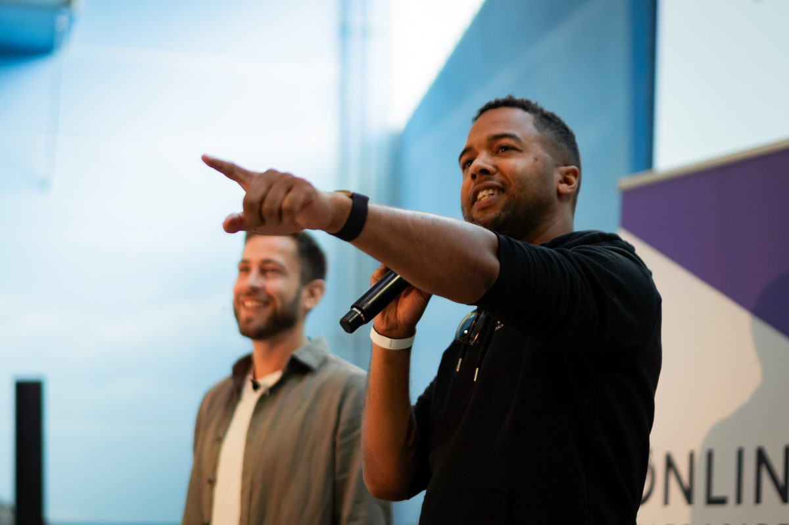

Innere Klarheit.
Äußeres Wachstum.
Ich bin Sascha Boampong, Unternehmer. Als mehrfacher Gründer und Begleiter helfe ich Selbstständigen und Unternehmern, ihren Erfolg zu erreichen – und ihn dann auch zu genießen.
Wir setzen im Innen an, nicht im Außen: an den Herausforderungen, an denen der Kopf nicht mehr weiterkommt. Da, wo du alles verstanden hast und das Problem trotzdem bleibt. Business ist Hochleistungssport – dazu gehört auch, abzuschalten und zu regenerieren.
Wie wir arbeiten.
Klarheit finden
Zuerst schauen wir, wo deine Herausforderung wirklich liegt und was du dir wünschst. Oft ist genau das der eigentliche Schritt: herauszufinden, was das Ziel überhaupt ist. Ich helfe dir, durch den Nebel zu kommen.
Ursache entdecken
Dann gehen wir an die Wurzel. Mit Mentaltechniken, die unterhalb des Verstandes ansetzen – dort, wo die Herausforderungen tatsächlich entstehen. Werkzeuge wie Hypnose und Breathwork helfen, dein Nervensystem zu regulieren und an die eigentlichen Ursachen heranzukommen.
In den Alltag integrieren
Dann beobachten wir, was sich verändert. Wir nehmen die Themen, die sich zeigen, Schritt für Schritt mit in deinen Alltag. So näherst du dich deinem Ziel iterativ – nicht in einem großen Sprung, sondern in echten, tragfähigen Schritten.
Was Klienten sagen.
„Antworten zu fühlen auf Fragen, wo ich mit dem Verstand nicht weiterkam."
Sascha hält einen unglaublich sicheren Raum, in dem alles da sein darf. […] Fragen rund um die Freiberuflichkeit – und die Antworten kommen aus ganz anderen Ecken und treffen ins Herz. Danke Sascha!
„Millionen-Unternehmer und trotzdem Mensch geblieben."
Sascha hebt sich von vielen anderen ab, indem er authentisches Marketing betreibt. […] Offen, ehrlich und bodenständig erzählt er sowohl von seinen Erfolgen als auch von seinen Misserfolgen. Seinen Content schicke ich regelmäßig an befreundete Selbstständige und Unternehmer.
„Zum ersten Mal wirklich verstanden, worum es geht."
Obwohl ich schon einige Erfahrungen mit Breathwork gemacht hatte […]. Ich habe mich die ganze Session über sicher und professionell geleitet gefühlt – und es war eine sehr bereichernde persönliche Reise durch meine innere Welt.
Kein Coach, sondern Unternehmer und Begleiter.
Bevor ich Unternehmer wurde, war ich bei Feuerwehr und Rettungsdienst – jahrelang unter Hochdruck, als Einsatzleiter, Menschen durch Extremsituationen begleitend. Unternehmertum ist für mich auch so eine Extremsituation. Einen kühlen Kopf zu bewahren, hat mich von Anfang an begleitet.
Ich habe selbst gebraucht, was ich heute anbiete. Ich war getrieben, konnte kaum abschalten – und obwohl ich Dinge erreichte, von denen ich nur hätte träumen können, stellte sich keine Zufriedenheit ein. Irgendwann verstand ich: Das Eigentliche ist die innere Arbeit, unterhalb des Verstandes. Genau sie hat mich dahin gebracht, wo ich heute stehe – erfolgreich zu sein und es auch zu genießen.
Ich bin in erster Linie Unternehmer und durchlebe jeden Tag noch das, was viele durchleben. Ich habe mehrere Online-Unternehmen aufgebaut, einige mit Millionenumsätzen. Ich weiß, wie es ist, aus dem Nichts etwas zu erschaffen und daraus ein Unternehmen mit Verantwortung für Menschen zu bauen. Genau deshalb liebe ich diese Arbeit – weil ich Unternehmertum liebe und die Menschen dahinter.
Privat bin ich Papa einer Tochter und lebe auf dem Land an der Ostsee. Ich liebe die Natur, gute Bücher, gutes Essen und das unaufgeregte Leben. Nach Jahren voller Action genieße ich, dass das Leben auch leise schön sein darf.

Unternehmen, die ich aufgebaut habe



Fragen, die mir immer wieder gestellt werden.
Für wen ist diese Arbeit – und für wen nicht?
Für Selbstständige und Unternehmer:innen, die weiter wachsen wollen – aber nicht länger auf Kosten von Gesundheit und Leben. Menschen, die getrieben sind, kaum noch abschalten können und sich fragen: „Ich habe so viel erreicht – warum kann ich es nicht genießen?" Oder die ein Problem im Außen schon verstanden haben und mit dem Verstand trotzdem nicht weiterkommen.
Worum es nicht geht: einfach den Fuß vom Gas zu nehmen. Es geht nicht ums Weniger, sondern darum, erfolgreich zu wachsen und dabei wieder bei sich anzukommen.
Wie läuft eine Zusammenarbeit konkret ab?
Du meldest dich über das Kontaktformular, und wir vereinbaren ein Kennenlernen – per Telefon oder Zoom, ganz wie es dir passt. Wir schauen gemeinsam auf dein Ziel und deine Herausforderungen und finden heraus, ob und wie wir zusammenarbeiten wollen. Danach geht es los. Die eigentliche Arbeit findet online statt.
Wie kann ich mir eine Session vorstellen?
Eine Standard-Session gibt es nicht. Wir schauen zuerst, mit welchem Thema du gerade hereinkommst, und dann wähle ich die Technik, die dazu passt – nicht umgekehrt. Du musst nicht zu meinen Methoden passen, die Methode passt sich dir an. Oft arbeiten wir dabei unterhalb des Verstandes: nicht nur reden, sondern dort ansetzen, wo das Problem wirklich sitzt, die Ursache lösen und das Ergebnis in deinen Alltag integrieren. Im Mittelpunkt steht immer dein Ziel – kein Schema F, in das ich dich presse.
Was unterscheidet dich von einem klassischen Business-Coach?
Ehrlich gesagt tue ich mich mit dem Wort „Coach" schwer – zu viele Instagram-Marketing-Bros haben es in Verruf gebracht. Ich bin in erster Linie selbst Unternehmer und begleite Selbstständige und Unternehmer:innen auf dem Weg in ihr Innenleben. Das ist wohl der Hauptunterschied. Ich lehne Geld, Erfolg und Wachstum nicht ab – im Gegenteil, ich habe selbst weiterhin unternehmerischen Drive. Ich verbinde die unternehmerische Arbeit mit der inneren. Es geht nicht darum, deinen Funnel zu ändern, sondern an die Wurzel zu gehen und dort nachhaltige Veränderung zu schaffen.
Wie komme ich mit dir in Kontakt?
Am einfachsten über das Kontaktformular. Dann melde ich mich persönlich, und wir lernen uns ganz unverbindlich kennen. Du sprichst nicht mit einem Team oder einem Setter, sondern direkt mit mir – ein echtes Gespräch über das, was dich gerade bewegt, kein Verkaufstermin.